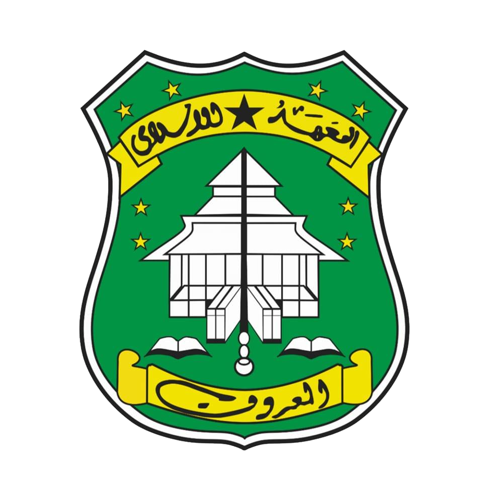

Pusat Syi'ar Keagamaan
Bandungsari Religi
Warisan Akhlak Walisanga dan Dokumentasi Pesantren Grobogan.
Sejarah & Warisan Religi
Desa Bandungsari memiliki sejarah spiritual yang sangat mengakar di Jawa Tengah. Keberadaan pesantren di desa ini dipercaya telah ada sejak era Wali Sanga, berawal dari dakwah Syaikh Ahmad Ali.
Pembaharuan Islam modern dimulai oleh Kiai Basyaruddin bin Kiai Raden Jumali (ulama dari Tuyuhan) yang mendirikan pesantren di kawasan "Kulon Kali".
Pondok Pesantren Al-Ma'ruf didirikan secara formal pada tahun 1944 M. Madrasah Manbaul Ulum dirintis oleh Kyai Masyhuri (murid KH. Hasyim 'Asy'ari) pada 1930-an.

Logo PP Al-Ma'ruf (Sejak 1944)
Direktori Pondok Pesantren
PP Al-Ma'ruf (Kulon Kali)
PP Fadllul Wahid (Ngangkruk)
PP Al-Muttaqin (Krajan)
PP Al-Khikmah Al-Ma'ruf (Kulon Kali)
PP Ash Shiddiq (Sendangsuro)
Agenda Majelis & Kajian Rutin
| JADWAL | PENGAJIAN | TEMPAT |
|---|---|---|
| Ahad Kliwon (06:00 WIB) | Kitab Ihya Ulumuddin & Manbaul Ulum | Serambi Masjid Jami' PP Al-Ma'ruf |
| Malam Jumat Pon (19:45 WIB) | Maulid Simtudduror & Istighosah | Kubah Utama PP Al-Khikmah |
| Senin & Rabu Sore (16:00 WIB) | Fiqih Kontemporer & Kitab Kuning | Mushola Fadllul Wahid Ngangkruk |